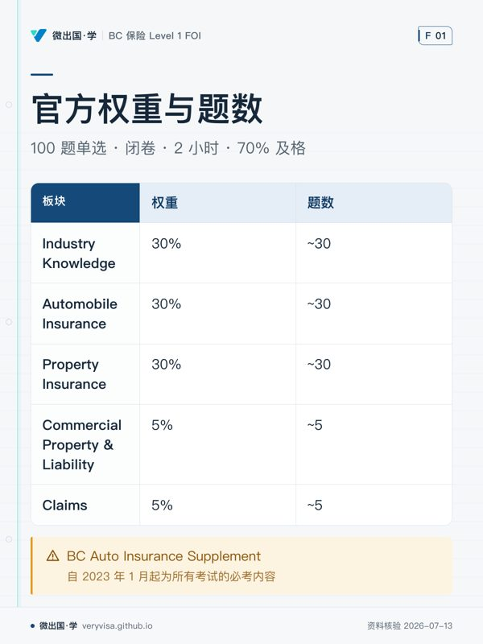

一张图看懂考纲
不看正文也能拿到本站的核心结论。全部知识卡在 <a href="cards/">知识卡</a> 页。

- 先看先看权重栏，再对应题数栏，分清卷面重心。
- 易漏Auto 还覆盖消费者保护、共享出行、Enhanced Care 等子项。
- 下一步去讲义核对子项，再到练习按权重分配复习。
考纲长这样，你的时间就该这样分
这不是建议，是考卷的实际构成。100 题单选 · 2 小时 · 70% 及格 · 每题 72 秒。 按篇幅学而不是按权重学，是备考里最贵的一个错误。
讲义卡组
一屏一个意思，每几张插一道自测。不是把长文切碎——是单独编排过的取舍： 哪些值得独占一屏是判断。适合第一遍学与考前过；要查细节仍回全文讲解。
保障条件与专项险
Conditions, Registration and Specialty Products
前面几讲讲的是保障本身。这一讲讲保障的边界：车什么时候才算合法上路，什么情况下 ICBC 可以一分不赔还回头找你要钱。这一块有三处考试口径与现行法条对不上，是这个板块最容易在真客户面前说错话的地方。
BC 车险赔付边界
Who Pays What — BC Autoplan
汽车保险占考纲 30%，而这一块最难的不是记条款，是判断一笔损失该由哪一项保障出钱。Basic 与 Optional、人伤与车损、省内与省外、公路与非公路——每一条线两边的答案完全不同。
农场保险与 BC 农机上路
Farm Insurance & BC Farm Vehicles
农场主题需要分开识别住宅、经营、人员与车辆风险。现有证据不能确定FOI或CAIB的农场考查比例，不把IIC另一考试路径权重移作官方分值。
Enhanced Care 给付全图
Who Gets Paid What — BC Enhanced Care
汽车保险占考纲 30%，而 Enhanced Care 这一块最难的不是记金额——金额每年 4 月 1 日全换一遍。难的是分流：一笔诉求进来，先判它属于三部法规里的哪一部，再判 ICBC 是先赔还是殿后，最后才轮到算钱。
15 条法定条件
The 15 Statutory Conditions
章末自测第 8 题就是 15 条与 15 个描述的配对题（(i)–(xv) 对 (a)–(o)）。能把编号与内容对上，这一章就拿住大半。
财产险赔款计算
Basis of Claim Payment
ch05 全章篇幅最大、考点最密的一节。财产险占考纲 30%，而这一节是其中唯一会让你算数字的地方——概念题猜得到，算错就是错。
商业财产与共保
Commercial Property & Co-Insurance
商业财产只占考纲 5%，但它的篇幅占全课内容的 11%——按篇幅投时间会亏。这一讲只挑真正会考的：两大 Form、共保公式、几条通用条款。
过失与占用人责任
Negligence & Occupiers' Liability
责任那一半是财产险 30% 里最容易失分的地方：它考的不是保单条款，是「什么时候才轮到保单」。而考试口径这一章讲的是加拿大共同法的通用版本，BC 把其中一大块写成了成文法——两套并存，考试用一套、执业用另一套。
理赔流程与角色
The Claims Process
Claims 只占考纲 5%，但它是唯一一块把前面所有章节串起来的内容：法定条件在这里被执行、赔款计算在这里落地、经纪的服务质量在这里被客户真正看见。
保险业基础与合同法
Industry Foundations & Contract Law
Industry Knowledge 占考纲 30%，是最大的一块。而这一讲是全课第一块地基——后面每一章的概念都建在这些定义上。它也是「性价比最高的三章」之一：篇幅小、题密度高。
题库覆盖诚实交代
这张表是给你看的，不是给我自己看的。题库还没铺满，哪里薄就写在这里。
| 板块 | 考纲 | 题数 | 实际占比 | 状态 |
|---|---|---|---|---|
| 行业与监管 | 30% | 110 | 24.8% | ⚠️ 缺口 |
| 汽车保险 | 30% | 134 | 30.2% | — |
| 财产保险 | 30% | 114 | 25.7% | — |
| 商业险与责任 | 5% | 37 | 8.3% | — |
| 理赔 | 5% | 49 | 11.0% | — |
章节温习与自测
闭卷自测题 + 判分点。做完对答案，别只看不做。
制度与事实层
牌照路径、考纲、费用与日期、官方源、冲突台账。
ICBC 深度指南
自产实务指南，覆盖 Basic Autoplan / Enhanced Care / UMP / UDP。
其它考试
一考一站，各自独立：进度、错题、复习队列互不影响。换设备用进度页的「导出学习数据」。